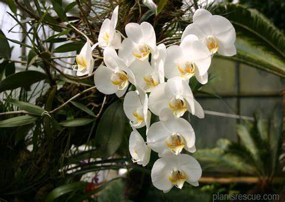

Anggrek Tebu
Anggrek Tebu, dengan nama ilmiah Grammatophyllum speciosum, adalah salah satu anggrek terbesar di dunia, dan dikenal dengan nama lain Giant Orchid atau Queen of Orchids. Anggrek ini berasal dari wilayah Asia Tenggara, termasuk Indonesia, Malaysia, dan Filipina, dan dapat ditemukan di hutan tropis

Anggrek Phalaenopsis
Anggrek Phalaenopsis adalah jenis anggrek yang populer dan dikenal dengan nama lain "Anggrek Bulan". Anggrek ini berasal dari kawasan tropis Asia Tenggara, termasuk Indonesia, Malaysia, dan Filipina Anggrek ini terkenal karena bentuk bunganya yang menyerupai sayap kupu-kupu, sehingga sering disebut juga "Moth Orchid" dalam bahasa Inggris..
Anggrek Dendrobium
Anggrek Dendrobium adalah salah satu jenis anggrek yang populer dan beragam, berasal dari kawasan tropis Asia, seperti India, China, dan banyak negara di Asia Tenggara, termasuk Indonesia.Anggrek Dendrobium sering ditemukan di berbagai habitat, dari dataran rendah tropis hingga daerah pegunungan yang lebih dingin.

Anggrek Radiata
Anggrek Radiata, atau yang dikenal dengan nama ilmiah Habenaria radiata, adalah jenis anggrek darat yang unik dan sangat cantik. Anggrek Radiata berasal dari Jepang, Korea, dan beberapa bagian dari Asia Timur, dan tumbuh di daerah dengan kelembaban tinggi Ukuran bunganya kecil, biasanya sekitar 4 cm, tetapi sangat menawan dengan detail yang rumit.
Anggrek Emas Kinablu
Anggrek Emas Kinabalu, atau yang dikenal dengan nama ilmiah Rothschild's Slipper Orchid (Paphiopedilum rothschildianum), adalah salah satu jenis anggrek yang sangat langka dan berharga. Anggrek ini berasal dari kawasan Gunung Kinabalu di Sabah, Malaysia. Bunga ini juga terkenal karena ukurannya yang cukup besar, dengan kelopak yang lebar dan bersegi.
Anggrek Hitam
Anggrek Hitam, dengan nama ilmiah Coelogyne pandurata, adalah salah satu spesies anggrek yang langka dan eksotis, dikenal karena keunikannya. Anggrek ini berasal dari kawasan Kalimantan, Sumatra, dan Semenanjung Malaysia. Aroma bunganya kuat dan manis, biasanya mekar antara bulan Maret hingga Juni.